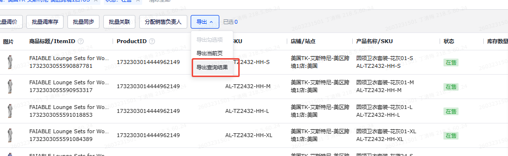

TK库存检查 — 需求文档
以需求为一级维度；源数据取数方式在文末「源数据统一梳理」统一说明。参照最新原型：htmls/库存检查看板-1.0.html；字段来源参照 Excel：6月4日-思唯修改的映射表.xlsx（映射表 Sheet）。
一、需求一：TK库存检查-PID&SKU 维度看板
| 优先级 | — |
|---|---|
| 影响面 | 库存检查、库存同步异常排查、跨仓库存核对 |
| 价值 | 1、统一梳理 TikTok 在线商品与各仓库存数据 2、支持快速发现库存少同步、超卖风险、同步异常 3、沉淀 PID&SKU 维度库存检查看板，便于业务排查 |
1.1 需求描述
- 输入：
TIKTOK-在线商品、站点产品库存-自定义导出、TikTok.FBT库存-自定义导出、积加-商品管理-可用库存。 - 目标：用映射表，做一个以 PID&SKU 维度的库存检查看板。
- 核心口径：先以 TikTok 在线商品为商品范围，再按 SKU 关联站点库存、FBT 库存和积加商品管理可用库存，计算总库存、国内库存、海外在途、海外在库、店铺应同步、店铺实际同步、库存差异与异常判断。
- 场景：用于排查各仓库存与店铺实际同步库存之间的差异，识别少同步或超卖风险。
1.2 流程
- 从 TIKTOK-在线商品 获取 PID、SKU、站点、产品名称、店铺等基础商品维度。
- 以 TIKTOK-在线商品 为商品基础表，按 PID&SKU 关联 站点产品库存-自定义导出，拆分国内仓、谷仓、万邑通、英国退货仓等不同仓库维度的库存。
- 以 TIKTOK-在线商品 为商品基础表，按 PID&SKU 关联 TikTok.FBT库存-自定义导出，补充 FBT 在途量、FBT 可用量。
- 结合 积加-商品管理-可用库存，基于积加接口获取的数据并按 PID 查询，核对店铺后台已同步库存，形成“我们有的库存”和“实际已同步库存”两套口径。
- 基于映射表公式，计算海外在途库存、海外可用库存、总在途库存、总可用库存、总库存、库存是否异常，以及各仓差异字段。
- 最终产出 TK库存检查 看板，按 PID&SKU 粒度展示各仓库存与异常结果。
1.3 字段与来源（PID&SKU 看板，按最新原型）
- 对照来源：最新原型
htmls/库存检查看板-1.0.html与6月4日-思唯修改的映射表.xlsx的映射表Sheet。 - 字段口径：PID&SKU 维度当前展示 58 个列表字段；已移除“同步日期/时间”与 FC 履约仓字段。
- 汇总卡片：SKU总数、海外在库总库存、海外在途总库存、国内总库存、阀值同步异常数、少同步异常数、超卖风险异常数。其中阀值同步异常数、少同步异常数、超卖风险异常数点击后直接刷新/筛选列表，不再弹框。
- 数据源口径：库存来源包含 TK 后台商品管理库存、积加后台库存阀值设置、TIKTOK-在线商品、站点产品库存-自定义导出、积加平台仓库存导出、积加商品管理可用库存等。
- 映射表差异：映射表中仍出现但最新原型不展示的字段：
时间、FC03_ATL1、FC04_EWR2、FC01_ONT2、TikTok_Newville(PA)_FC、FC02_ORD1、TikTok_Eastvale(CA)_FC、TikTok_Perris(CA)_FC、FC06_HOU2、FC05_HOU1、FC07_ONT3、FC10_ORD2、FC09_ATL2、FC11_ONT5、FC12_HOU3、FC14_EWR4、FC15_SEA1、FC16_ORD3；需求文档以最新原型为准。
| 模块 | 看板字段 | 类型 | 源数据表 / 来源位置 | 口径 / 公式说明 |
|---|---|---|---|---|
| 产品基本信息 | 站点 | 映射 | TIKTOK-在线商品 | 按最新原型字段口径展示 |
| 产品基本信息 | 店铺 | 映射 | TIKTOK-在线商品 | 按最新原型字段口径展示 |
| 产品基本信息 | SPU | 映射 | TIKTOK-在线商品 | 按最新原型字段口径展示 |
| 产品基本信息 | SPU名称 | 映射 | TIKTOK-在线商品 | 按最新原型字段口径展示 |
| 产品基本信息 | PID | 映射 | TIKTOK-在线商品 | 按最新原型字段口径展示 |
| 产品基本信息 | MSKU | 映射 | TIKTOK-在线商品 | 按最新原型字段口径展示 |
| 产品基本信息 | SKU ID | 映射 | TIKTOK-在线商品 | 按最新原型字段口径展示 |
| 产品基本信息 | 库存SKU | 映射 | TIKTOK-在线商品 | 按最新原型字段口径展示 |
| 产品基本信息 | 库存SKU名称 | 映射 | TIKTOK-在线商品 | 按最新原型字段口径展示 |
| 总库存 | 总库存 | 计算/筛选 | 由同模块字段计算 | 总库存=总国内库存+总海外在途库存+海外在库总库存 |
| 总库存 | 总在途库存 | 计算/筛选 | 由同模块字段计算 | 总在途库存=（国内库存-国内在库库存）+海外在途总量 |
| 总库存 | 总可用库存 | 计算/筛选 | 由同模块字段计算 | 总可用库存=国内在库库存+海外在库总库存 |
| 国内库存 | 总国内库存 | 计算/筛选 | 由同模块字段计算 | 总国内库存=采购在途库存+工厂采购未交国内交货在途库存+国内在库库存 |
| 国内库存 | 采购在途库存 | 计算/筛选 | 由同模块字段计算 | 筛选仓库为美国TK-厦门直邮仓和美国TK-国内厦门仓；采购在途=采购量+在途量 |
| 国内库存 | 工厂采购未交量 | 计算/筛选 | 站点产品库存-自定义导出 | 筛选仓库为美国TK-厦门直邮仓和美国TK-国内厦门仓 |
| 国内库存 | 国内交货在途库存 | 计算/筛选 | 站点产品库存-自定义导出 | 筛选仓库为美国TK-厦门直邮仓和美国TK-国内厦门仓 |
| 国内库存 | 国内在库库存 | 计算/筛选 | 站点产品库存-自定义导出 | 筛选仓库为美国TK-厦门直邮仓和美国TK-国内厦门仓；可用量 |
| 海外在途库存 | 海外在途总量 | 计算/筛选 | 由同模块字段计算 | 海外在途总量=三方仓在途量+万邑通USKY3在途+万邑通USWC2在途+万邑通USWC在途+美国谷仓:美西仓库在途+FBT在途量+英国退货仓 |
| 海外在途库存 | 三方仓在途量 | 计算/筛选 | 站点产品库存-自定义导出 | 筛选仓库为万邑通:USKY3_Warehouse；万邑通:USWC2_Warehouse；万邑通:USWC_Warehouse；美国TK-艾斯特尼-美国谷仓:美西仓库 |
| 海外在途库存 | 万邑通USKY3在途 | 计算/筛选 | 由同模块字段计算 | 筛选仓库为万邑通:USKY3_Warehouse |
| 海外在途库存 | 万邑通USWC2在途 | 计算/筛选 | 由同模块字段计算 | 筛选仓库为万邑通::USWC2_Warehouse |
| 海外在途库存 | 万邑通USWC在途 | 计算/筛选 | 由同模块字段计算 | 筛选仓库为万邑通:USWC_Warehouse |
| 海外在途库存 | 美国谷仓:美西仓库在途 | 计算/筛选 | 由同模块字段计算 | 筛选仓库为美国TK-艾斯特尼-美国谷仓:美西仓库 |
| 海外在途库存 | FBT在途量 | 映射 | 积加-平台仓库存导出 | 按最新原型字段口径展示 |
| 海外在途库存 | 英国退货仓在途量 | 计算 | 由同模块字段计算 | 按最新原型字段口径展示 |
| 海外在库库存 | 海外在库总库存 | 计算/筛选 | 由同模块字段计算 | 美国站点：；=谷仓-1加万邑通USKY3-1加万邑通USWC-1加万邑通USWC2-1加国内仓-1加FBT-1（接口能不能抓到？）加FBA(空着)-1；英国站点：；=国内仓-1加英国退货仓-1 |
| 海外在库库存 | 积加-万邑通USKY3 | 计算/筛选 | 站点产品库存-自定义导出 | 筛选仓库为万邑通:USKY3_Warehouse |
| 海外在库库存 | 积加-万邑通USWC2 | 计算/筛选 | 站点产品库存-自定义导出 | 筛选仓库为万邑通:USWC2_Warehouse |
| 海外在库库存 | 积加-万邑通USWC | 计算/筛选 | 站点产品库存-自定义导出 | 筛选仓库为万邑通:USWC_Warehouse |
| 海外在库库存 | 积加-谷仓美西仓库 | 计算/筛选 | 站点产品库存-自定义导出 | 筛选仓库为美国TK-艾斯特尼-美国谷仓:美西仓库 |
| 海外在库库存 | 积加-FBA仓库 | 计算 | 由同模块字段计算 | 按最新原型字段口径展示 |
| 海外在库库存 | 积加-FBT可用 | 映射 | 积加-平台仓库存导出 | 按最新原型字段口径展示 |
| 海外在库库存 | 三方仓可用量 | 计算 | 由同模块字段计算 | 按最新原型字段口径展示 |
| 海外在库库存 | 积加-英国退货仓 | 计算/筛选 | 站点产品库存-自定义导出 | 筛选仓库为万邑通:UKTW Warehouse和美国TK-艾斯特尼-英国退件仓:英国仓 |
| 店铺应该被同步的库存 | 店铺应该被同步的库存 | 计算/筛选 | 由同模块字段计算 | 店铺应该被同步的库存=国内在库E15+海外在库E28 |
| 店铺实际被同步库存的情况 | 店铺侧被同步的总库存 | 计算/筛选 | 由同模块字段计算 | 店铺侧被同步的总库存=在线商品库存数量下可用数量下浮所有仓库的总和（以下几个仓是我从店铺后台导出的所有仓，未来可能要增加，这个部分需要讨论 |
| 店铺实际被同步库存的情况 | 店铺侧-美国TK厦门直邮仓 | 映射 | 积加-商品管理-可用库存 | 按最新原型字段口径展示 |
| 店铺实际被同步库存的情况 | 店铺侧-万邑通USKY3 | 映射 | 积加-商品管理-可用库存 | 按最新原型字段口径展示 |
| 店铺实际被同步库存的情况 | 店铺侧-万邑通USWC2 | 映射 | 积加-商品管理-可用库存 | 按最新原型字段口径展示 |
| 店铺实际被同步库存的情况 | 店铺侧-万邑通USWC | 映射 | 积加-商品管理-可用库存 | 按最新原型字段口径展示 |
| 店铺实际被同步库存的情况 | 店铺侧-谷仓美西仓库 | 映射 | 积加-商品管理-库存数量下-可用库存 | 按最新原型字段口径展示 |
| 店铺实际被同步库存的情况 | 店铺侧-FBA仓库 | 映射 | 积加-商品管理-可用库存 | 按最新原型字段口径展示 |
| 店铺实际被同步库存的情况 | 店铺侧-FBT可用 | 计算 | 由同模块字段计算 | 按最新原型字段口径展示 |
| 店铺实际被同步库存的情况 | 店铺侧-英国退货仓 | 映射 | 积加-商品管理-可用库存 | 按最新原型字段口径展示 |
| 库存差异 | 库存总差异 | 计算 | 由同模块字段计算 | 按最新原型字段口径展示 |
| 库存差异 | 国内仓-3 | 计算/筛选 | 由同模块字段计算 | E39店铺侧-美国TK厦门直邮仓-E19国内在库库存 |
| 库存差异 | 万邑通USKY3-3 | 计算/筛选 | 由同模块字段计算 | E40店铺侧-万邑通USKY3-E29积加-万邑通USKY3 |
| 库存差异 | 万邑通USWC2-3 | 计算/筛选 | 由同模块字段计算 | E41店铺侧-万邑通USWC2-E30积加-万邑通USWC2 |
| 库存差异 | 万邑通USWC-3 | 计算/筛选 | 由同模块字段计算 | E42店铺侧-万邑通USWC-E31积加-万邑通USWC |
| 库存差异 | 谷仓-3 | 计算/筛选 | 由同模块字段计算 | E43店铺侧-谷仓美西仓库-E32积加-谷仓美西仓库 |
| 库存差异 | FBA(空着)-3 | 计算/筛选 | 由同模块字段计算 | E44店铺侧-FBA仓库-E33积加-FBA仓库 |
| 库存差异 | FBT-3 | 计算/筛选 | 由同模块字段计算 | E45店铺侧-FBT可用-E34积加-FBT可用 |
| 库存差异 | 英国退货仓-3 | 计算/筛选 | 由同模块字段计算 | E46店铺侧-店铺侧-英国退货仓-E34积加-E35积加-英国退货仓 |
| 异常判断 | 异常仓库 | 判断 | 由同模块字段计算 | 按最新原型字段口径展示 |
| 异常判断 | 库存总差异 | 计算 | 由同模块字段计算 | 按最新原型字段口径展示 |
| 异常判断 | 库存阀值设置 | 计算/筛选 | 调库存规则 | 调库存规则 |
| 异常判断 | 库存是否异常 | 计算/筛选 | 由同模块字段计算 | 库存总差异不等于0的情况下标记异常 |
| 异常判断 | 异常类型 | 计算/筛选 | 由同模块字段计算 | 0<库存总差异<=阀值，类型：阀值问题，提示：库存到达阀值，调整阀值or备货；库存总差异>阀值，类型：少同步，提示：库存同步数量少了，安排检查库存；库存总差异<0, 类型：超卖风险，提示：实际没那么多库存，可能超卖，立即检查 |
1.4 最终目标结果
需求一达成的目标：TK库存检查-PID&SKU 维度看板，按 PID&SKU 展示商品基础信息、各仓库存、同步库存、库存差异与库存是否异常结果，用于日常库存同步排查；该视图展示站点、店铺、SPU、SPU名称、PID、MSKU、SKU ID、库存SKU、库存SKU名称等基础信息。
页面输出应至少包含以下几类信息：
- 商品基础维度：站点、店铺、SPU、SPU名称、PID、MSKU、SKU ID、库存SKU、库存SKU名称。
- 库存来源维度：总库存、总在途库存、总可用库存、总国内库存、采购在途库存、工厂采购未交量、国内交货在途库存、国内在库库存、海外在途、海外在库、店铺应同步库存和店铺侧实际同步库存。
- 核对结果维度：库存总差异、国内仓/万邑通/谷仓/FBA/FBT/英国退货仓差异、异常仓库、库存阀值设置、库存是否异常、异常类型。
二、需求二：TK库存检查-SPU 维度看板
| 优先级 | — |
|---|---|
| 影响面 | 库存汇总查看、SPU 级异常排查 |
| 价值 | 在 PID&SKU 明细基础上，支持按 SPU 聚合查看库存健康度，便于管理层或业务做汇总判断 |
2.1 需求描述
- 目标：用映射表，做一个以 SPU 维度的看板。
- 底表来源：直接基于需求一产出的 TK库存检查-PID&SKU 维度底表 做二次汇总，不单独重建一套明细来源。
- 聚合方式：以 SPU 为维度做
group by，将需求一中的库存相关字段汇总到 SPU 粒度，形成汇总视角。 - 字段收口：SPU 看板结果中不展示 PID、MSKU、SKU ID、库存SKU、库存SKU名称；点击 SPU 行可折叠查看该 SPU 下对应的 SKU 明细。
- 预期用途：快速查看某个 SPU 在不同站点、不同仓的库存状态与异常情况。
2.2 流程
- 先完成 PID&SKU 维度明细数据的梳理与落表。
- 以需求一底表作为唯一输入，按 SPU 做
group by聚合，形成 SPU 维度库存检查看板。 - 需求一中归属于同一站点、店铺、SPU 的多条 PID&SKU 明细，需要合并为一条 SPU 粒度结果。
- 各库存数值字段默认按 SPU 粒度进行求和汇总；异常字段不直接沿用明细结果，而是基于 SPU 聚合后的库存结果重新判断。
2.3 字段与来源（SPU 看板，按最新原型）
- 生成口径：SPU 视图基于 PID&SKU 明细底表按站点、店铺、SPU、SPU名称聚合生成；列表点击某一行可折叠查看对应 SKU 明细。
- 字段口径：SPU 维度当前展示 53 个列表字段；产品基本信息仅保留站点、店铺、SPU、SPU名称。
- 汇总卡片：SPU总数、海外在库总库存、海外在途总库存、国内总库存、阀值同步异常数、少同步异常数、超卖风险异常数。其中三类异常卡片点击后刷新/筛选 SPU 列表。
- 合计行：SPU 维度保留合计行；PID&SKU 维度不展示合计行。
| 模块 | 看板字段 | 类型 | 源数据表 / 来源位置 | 口径 / 公式说明 |
|---|---|---|---|---|
| 产品基本信息 | 站点 | 映射 | TIKTOK-在线商品 | 按最新原型字段口径展示 |
| 产品基本信息 | 店铺 | 映射 | TIKTOK-在线商品 | 按最新原型字段口径展示 |
| 产品基本信息 | SPU | 映射 | TIKTOK-在线商品 | 按最新原型字段口径展示 |
| 产品基本信息 | SPU名称 | 映射 | TIKTOK-在线商品 | 按最新原型字段口径展示 |
| 总库存 | 总库存 | SPU聚合 | PID&SKU 明细底表 | 按 SPU 粒度对 PID&SKU 明细字段汇总；异常判断按 SPU 汇总后的库存总差异重新判断 |
| 总库存 | 总在途库存 | SPU聚合 | PID&SKU 明细底表 | 按 SPU 粒度对 PID&SKU 明细字段汇总；异常判断按 SPU 汇总后的库存总差异重新判断 |
| 总库存 | 总可用库存 | SPU聚合 | PID&SKU 明细底表 | 按 SPU 粒度对 PID&SKU 明细字段汇总；异常判断按 SPU 汇总后的库存总差异重新判断 |
| 国内库存 | 总国内库存 | SPU聚合 | PID&SKU 明细底表 | 按 SPU 粒度对 PID&SKU 明细字段汇总；异常判断按 SPU 汇总后的库存总差异重新判断 |
| 国内库存 | 采购在途库存 | SPU聚合 | PID&SKU 明细底表 | 按 SPU 粒度对 PID&SKU 明细字段汇总；异常判断按 SPU 汇总后的库存总差异重新判断 |
| 国内库存 | 工厂采购未交量 | SPU聚合 | PID&SKU 明细底表 | 按 SPU 粒度对 PID&SKU 明细字段汇总；异常判断按 SPU 汇总后的库存总差异重新判断 |
| 国内库存 | 国内交货在途库存 | SPU聚合 | PID&SKU 明细底表 | 按 SPU 粒度对 PID&SKU 明细字段汇总；异常判断按 SPU 汇总后的库存总差异重新判断 |
| 国内库存 | 国内在库库存 | SPU聚合 | PID&SKU 明细底表 | 按 SPU 粒度对 PID&SKU 明细字段汇总；异常判断按 SPU 汇总后的库存总差异重新判断 |
| 海外在途库存 | 海外在途总量 | SPU聚合 | PID&SKU 明细底表 | 按 SPU 粒度对 PID&SKU 明细字段汇总；异常判断按 SPU 汇总后的库存总差异重新判断 |
| 海外在途库存 | 三方仓在途量 | SPU聚合 | PID&SKU 明细底表 | 按 SPU 粒度对 PID&SKU 明细字段汇总；异常判断按 SPU 汇总后的库存总差异重新判断 |
| 海外在途库存 | 万邑通USKY3在途 | SPU聚合 | PID&SKU 明细底表 | 按 SPU 粒度对 PID&SKU 明细字段汇总；异常判断按 SPU 汇总后的库存总差异重新判断 |
| 海外在途库存 | 万邑通USWC2在途 | SPU聚合 | PID&SKU 明细底表 | 按 SPU 粒度对 PID&SKU 明细字段汇总；异常判断按 SPU 汇总后的库存总差异重新判断 |
| 海外在途库存 | 万邑通USWC在途 | SPU聚合 | PID&SKU 明细底表 | 按 SPU 粒度对 PID&SKU 明细字段汇总；异常判断按 SPU 汇总后的库存总差异重新判断 |
| 海外在途库存 | 美国谷仓:美西仓库在途 | SPU聚合 | PID&SKU 明细底表 | 按 SPU 粒度对 PID&SKU 明细字段汇总；异常判断按 SPU 汇总后的库存总差异重新判断 |
| 海外在途库存 | FBT在途量 | SPU聚合 | PID&SKU 明细底表 | 按 SPU 粒度对 PID&SKU 明细字段汇总；异常判断按 SPU 汇总后的库存总差异重新判断 |
| 海外在途库存 | 英国退货仓在途量 | SPU聚合 | PID&SKU 明细底表 | 按 SPU 粒度对 PID&SKU 明细字段汇总；异常判断按 SPU 汇总后的库存总差异重新判断 |
| 海外在库库存 | 海外在库总库存 | SPU聚合 | PID&SKU 明细底表 | 按 SPU 粒度对 PID&SKU 明细字段汇总；异常判断按 SPU 汇总后的库存总差异重新判断 |
| 海外在库库存 | 积加-万邑通USKY3 | SPU聚合 | PID&SKU 明细底表 | 按 SPU 粒度对 PID&SKU 明细字段汇总；异常判断按 SPU 汇总后的库存总差异重新判断 |
| 海外在库库存 | 积加-万邑通USWC2 | SPU聚合 | PID&SKU 明细底表 | 按 SPU 粒度对 PID&SKU 明细字段汇总；异常判断按 SPU 汇总后的库存总差异重新判断 |
| 海外在库库存 | 积加-万邑通USWC | SPU聚合 | PID&SKU 明细底表 | 按 SPU 粒度对 PID&SKU 明细字段汇总；异常判断按 SPU 汇总后的库存总差异重新判断 |
| 海外在库库存 | 积加-谷仓美西仓库 | SPU聚合 | PID&SKU 明细底表 | 按 SPU 粒度对 PID&SKU 明细字段汇总；异常判断按 SPU 汇总后的库存总差异重新判断 |
| 海外在库库存 | 积加-FBA仓库 | SPU聚合 | PID&SKU 明细底表 | 按 SPU 粒度对 PID&SKU 明细字段汇总；异常判断按 SPU 汇总后的库存总差异重新判断 |
| 海外在库库存 | 积加-FBT可用 | SPU聚合 | PID&SKU 明细底表 | 按 SPU 粒度对 PID&SKU 明细字段汇总；异常判断按 SPU 汇总后的库存总差异重新判断 |
| 海外在库库存 | 三方仓可用量 | SPU聚合 | PID&SKU 明细底表 | 按 SPU 粒度对 PID&SKU 明细字段汇总；异常判断按 SPU 汇总后的库存总差异重新判断 |
| 海外在库库存 | 积加-英国退货仓 | SPU聚合 | PID&SKU 明细底表 | 按 SPU 粒度对 PID&SKU 明细字段汇总；异常判断按 SPU 汇总后的库存总差异重新判断 |
| 店铺应该被同步的库存 | 店铺应该被同步的库存 | SPU聚合 | PID&SKU 明细底表 | 按 SPU 粒度对 PID&SKU 明细字段汇总；异常判断按 SPU 汇总后的库存总差异重新判断 |
| 店铺实际被同步库存的情况 | 店铺侧被同步的总库存 | SPU聚合 | PID&SKU 明细底表 | 按 SPU 粒度对 PID&SKU 明细字段汇总；异常判断按 SPU 汇总后的库存总差异重新判断 |
| 店铺实际被同步库存的情况 | 店铺侧-美国TK厦门直邮仓 | SPU聚合 | PID&SKU 明细底表 | 按 SPU 粒度对 PID&SKU 明细字段汇总；异常判断按 SPU 汇总后的库存总差异重新判断 |
| 店铺实际被同步库存的情况 | 店铺侧-万邑通USKY3 | SPU聚合 | PID&SKU 明细底表 | 按 SPU 粒度对 PID&SKU 明细字段汇总；异常判断按 SPU 汇总后的库存总差异重新判断 |
| 店铺实际被同步库存的情况 | 店铺侧-万邑通USWC2 | SPU聚合 | PID&SKU 明细底表 | 按 SPU 粒度对 PID&SKU 明细字段汇总；异常判断按 SPU 汇总后的库存总差异重新判断 |
| 店铺实际被同步库存的情况 | 店铺侧-万邑通USWC | SPU聚合 | PID&SKU 明细底表 | 按 SPU 粒度对 PID&SKU 明细字段汇总；异常判断按 SPU 汇总后的库存总差异重新判断 |
| 店铺实际被同步库存的情况 | 店铺侧-谷仓美西仓库 | SPU聚合 | PID&SKU 明细底表 | 按 SPU 粒度对 PID&SKU 明细字段汇总；异常判断按 SPU 汇总后的库存总差异重新判断 |
| 店铺实际被同步库存的情况 | 店铺侧-FBA仓库 | SPU聚合 | PID&SKU 明细底表 | 按 SPU 粒度对 PID&SKU 明细字段汇总；异常判断按 SPU 汇总后的库存总差异重新判断 |
| 店铺实际被同步库存的情况 | 店铺侧-FBT可用 | SPU聚合 | PID&SKU 明细底表 | 按 SPU 粒度对 PID&SKU 明细字段汇总；异常判断按 SPU 汇总后的库存总差异重新判断 |
| 店铺实际被同步库存的情况 | 店铺侧-英国退货仓 | SPU聚合 | PID&SKU 明细底表 | 按 SPU 粒度对 PID&SKU 明细字段汇总；异常判断按 SPU 汇总后的库存总差异重新判断 |
| 库存差异 | 库存总差异 | SPU聚合 | PID&SKU 明细底表 | 按 SPU 粒度对 PID&SKU 明细字段汇总；异常判断按 SPU 汇总后的库存总差异重新判断 |
| 库存差异 | 国内仓-3 | SPU聚合 | PID&SKU 明细底表 | 按 SPU 粒度对 PID&SKU 明细字段汇总；异常判断按 SPU 汇总后的库存总差异重新判断 |
| 库存差异 | 万邑通USKY3-3 | SPU聚合 | PID&SKU 明细底表 | 按 SPU 粒度对 PID&SKU 明细字段汇总；异常判断按 SPU 汇总后的库存总差异重新判断 |
| 库存差异 | 万邑通USWC2-3 | SPU聚合 | PID&SKU 明细底表 | 按 SPU 粒度对 PID&SKU 明细字段汇总；异常判断按 SPU 汇总后的库存总差异重新判断 |
| 库存差异 | 万邑通USWC-3 | SPU聚合 | PID&SKU 明细底表 | 按 SPU 粒度对 PID&SKU 明细字段汇总；异常判断按 SPU 汇总后的库存总差异重新判断 |
| 库存差异 | 谷仓-3 | SPU聚合 | PID&SKU 明细底表 | 按 SPU 粒度对 PID&SKU 明细字段汇总；异常判断按 SPU 汇总后的库存总差异重新判断 |
| 库存差异 | FBA(空着)-3 | SPU聚合 | PID&SKU 明细底表 | 按 SPU 粒度对 PID&SKU 明细字段汇总；异常判断按 SPU 汇总后的库存总差异重新判断 |
| 库存差异 | FBT-3 | SPU聚合 | PID&SKU 明细底表 | 按 SPU 粒度对 PID&SKU 明细字段汇总；异常判断按 SPU 汇总后的库存总差异重新判断 |
| 库存差异 | 英国退货仓-3 | SPU聚合 | PID&SKU 明细底表 | 按 SPU 粒度对 PID&SKU 明细字段汇总；异常判断按 SPU 汇总后的库存总差异重新判断 |
| 异常判断 | 异常仓库 | SPU聚合 | PID&SKU 明细底表 | 按 SPU 粒度对 PID&SKU 明细字段汇总；异常判断按 SPU 汇总后的库存总差异重新判断 |
| 异常判断 | 库存总差异 | SPU聚合 | PID&SKU 明细底表 | 按 SPU 粒度对 PID&SKU 明细字段汇总；异常判断按 SPU 汇总后的库存总差异重新判断 |
| 异常判断 | 库存阀值设置 | SPU聚合 | PID&SKU 明细底表 | 按 SPU 粒度对 PID&SKU 明细字段汇总；异常判断按 SPU 汇总后的库存总差异重新判断 |
| 异常判断 | 库存是否异常 | SPU聚合 | PID&SKU 明细底表 | 按 SPU 粒度对 PID&SKU 明细字段汇总；异常判断按 SPU 汇总后的库存总差异重新判断 |
| 异常判断 | 异常类型 | SPU聚合 | PID&SKU 明细底表 | 按 SPU 粒度对 PID&SKU 明细字段汇总；异常判断按 SPU 汇总后的库存总差异重新判断 |
2.4 最终目标结果
需求二达成的目标：TK库存检查-SPU 维度看板，基于需求一底表按 SPU 聚合后，汇总展示各站点、各仓库存与异常情况，为库存汇总排查提供高层视图。
SPU 看板中不展示 PID、MSKU、SKU ID、库存SKU、库存SKU名称；点击 SPU 行可折叠查看对应 PID&SKU 明细。
三、源数据统一梳理
以下为当前库存检查需求涉及的源数据，统一说明取数方式、用途，以及是否已经在 源数据集成列表 中登记。
当前对照文件：
本节中的“已集成 / 未登记”判断，以该清单当前内容为准：
bi/tkDashboard/数据源相关/源数据统一梳理.html。本节中的“已集成 / 未登记”判断，以该清单当前内容为准：
- 已在源数据集成列表中存在：说明已有对应 ODS 表或至少已有统一登记口径。
- 当前未在源数据集成列表中登记：说明库存检查需求已识别出该源数据，但现有总清单中尚未补充对应 ODS 表名。
3.1 TIKTOK-在线商品
| 项目 | 说明 | 集成说明 |
|---|---|---|
| 来源 | 积加后台 | 当前未在源数据集成列表中登记 |
| 步骤 1 | 积加 → 销售 → 商品管理 → Tiktok自运营 → 筛选店铺 → 筛选在售 | 现有总清单中没有以 TIKTOK-在线商品 为名称的 ODS 记录 |
| 步骤 2 | 导出 → 导出查询结果 | 若后续确认与现有商品主数据复用，需要补充统一命名口径 |
| 店铺范围 | 美国TK-艾斯特尼-美区跨境1店、美国TK-艾斯特尼-美区跨境2店、美国TK-艾斯特尼-美区跨境3店、美国TK-艾斯特尼-英国直邮店:GB | — |
| 用途 | 提供 SPU、站点、父产品名称、PID、SKU、产品名称、店铺等商品基础信息，是库存检查的商品维度基础表。 | 业务语义上与“商品主数据”接近，但是否可复用 全渠道商品表 → ods_product_api_jijia_omnichannel_product_df，当前待确认 |

截图 1：TIKTOK-在线商品，步骤 1，进入积加后台销售 → 商品管理 → Tiktok自运营，并按店铺、在售状态筛选。

截图 2：TIKTOK-在线商品，步骤 2，导出查询结果。
3.2 站点产品库存-自定义导出
| 项目 | 说明 | 集成说明 |
|---|---|---|
| 来源 | 积加后台 | 当前未在源数据集成列表中登记 |
| 步骤 1 | 积加 → 仓库 → 产品库存 → 站点产品库存 → 筛选仓库 → 筛选共享 | 现有总清单中没有“站点产品库存”对应的 ODS 表 |
| 仓库范围 | 美区：美国TK-国内厦门仓、万邑通:USKY3_Warehouse、万邑通:USWC2_Warehouse、万邑通:USWC_Warehouse、美国TK-艾斯特尼-美国谷仓:美西仓库、美国TK-厦门直邮仓；英区：美国TK-国内厦门仓、美国TK-厦门直邮仓、美国TK-艾斯特尼-英国退件仓:英国仓、万邑通:UKTW Warehouse | — |
| 步骤 2 | 导出 → 自定义导出 | 后续若正式建设数仓链路，建议优先补充对应 ODS 表登记 |
| 用途 | 提供采购量、在途量、可用量等仓库库存字段，是交货在途库存、国内库存、三方仓在途量、谷仓/万邑通/英国退货仓库存等字段的主要来源。 | 这是库存检查场景下最核心的库存明细来源 |

截图 3：站点产品库存-自定义导出，步骤 1，进入积加后台仓库 → 产品库存 → 站点产品库存，并按仓库、共享状态筛选。

截图 4：站点产品库存-自定义导出，步骤 2，自定义导出操作截图。
3.3 TikTok.FBT库存-自定义导出
| 项目 | 说明 | 集成说明 |
|---|---|---|
| 来源 | 积加后台 | 当前未在源数据集成列表中登记 |
| 步骤 1 | 积加 → 仓库 → 平台仓库存 → TikTok自运营 → 筛选仓库为美国TK-艾斯特尼-美区跨境1店:US_FBT → 筛选同步状态为正常 | 现有总清单里没有 TikTok FBT 库存导出对应的 ODS 表 |
| 步骤 2 | 导出 → 自定义导出 | 后续若补齐接口或导出链路，建议同步补充源数据集成登记 |
| 用途 | 提供 FBT 在途量、FBT 可用量，用于补充平台仓库存维度。 | 当前需求和原型中均标注了 FBT 字段存在待确认项 |

截图 5：TikTok.FBT库存-自定义导出，步骤 1，进入平台仓库存 → TikTok自运营，并按 US_FBT 仓库、同步状态筛选。

截图 6：TikTok.FBT库存-自定义导出，步骤 2，自定义导出操作截图。
3.4 积加-商品管理-可用库存
| 项目 | 说明 | 集成说明 |
|---|---|---|
| 来源 | 积加后台接口 | 当前未在源数据集成列表中登记 |
| 实现方式 | 基于积加接口获取库存相关数据，查询口径按 PID 发起 | 现有总清单中没有“积加-商品管理-可用库存”对应的 ODS 表；该项应按接口型源数据补充登记 |
| 用途 | 作为店铺后台“实际被同步的库存”口径来源，对应谷仓-2、万邑通USKY3-2、万邑通USWC-2、万邑通USWC2-2、国内仓-2、FBA(空着)-2、英国退货仓-2 等字段。 | 该数据是“店铺后台已同步库存”口径的关键来源，与“我们有的库存”做对比后才能判断同步差异，建议后续补齐接口登记、请求参数与返回字段说明 |

截图 7：积加-商品管理-可用库存，对应库存数量页面的获取路径截图。
3.5 获取可用的仓库列表
| 项目 | 说明 | 集成说明 |
|---|---|---|
| 来源 | 积加后台接口 | 当前未在源数据集成列表中登记 |
| 实现方式 | 基于积加后台接口能力获取当前账号/业务范围下可用的仓库列表，不依赖手工导出 | 当前仓库相关源数据主要来自导出文件；该项需补充为接口型源数据 |
| 返回内容 | 仓库 ID、仓库名称、仓库类型、仓库所属站点/业务范围等基础信息（以接口实际返回为准） | 建议后续在接口文档中补充字段定义与请求示例 |
| 用途 | 为“站点产品库存-自定义导出”“积加-商品管理-可用库存”等库存数据提供仓库筛选候选集与仓库名称标准口径，支撑前端筛选项、仓库归类及仓库映射维护 | 该列表属于库存检查场景的基础维表/字典数据，不直接产出库存数值 |
| 备注 | 若后续正式建设数仓链路，建议将该接口结果沉淀为仓库维表，并与库存事实数据共用统一仓库主数据口径 | 建议补充接口登记、调度频率与增量/全量同步策略 |
四、需求与数据对照小结
| 需求 | 核心动作 | 使用的源数据 | 产出 |
|---|---|---|---|
| 需求一 | 按 PID&SKU 维度映射商品与库存字段，并计算异常结果 | TIKTOK-在线商品 + 站点产品库存-自定义导出 + TikTok.FBT库存-自定义导出 + 积加-商品管理-可用库存 + 获取可用的仓库列表 | TK库存检查-PID&SKU 维度看板 |
| 需求二 | 基于需求一底表按 SPU 聚合，缺失 PID/SKU 的记录也按 SPU 收口汇总 | 同上 | TK库存检查-SPU 维度看板 |